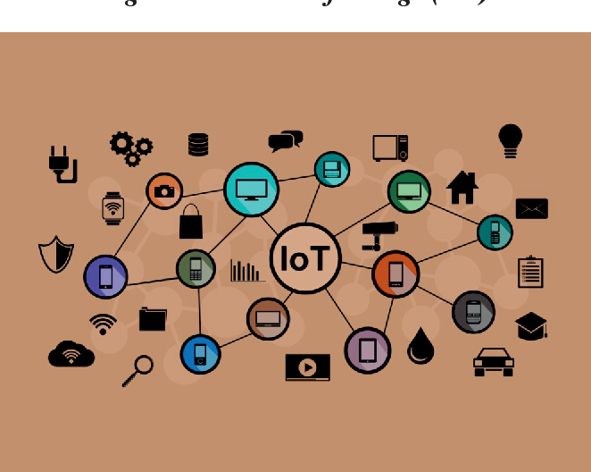

Developed IoT-based Smart Inventory Management system. Enabled real-time RFID communication for seamless tracking. Utilized ESP32, RFID RC522, MQTT, AWS, and SPI. Provided real-time monitoring data for analytics-based decision-making

UART stands for Universal Asynchronous Receiver/Transmitter. It is a hardware communication protocol that facilitates serial communication between devices. Unlike other communication protocols like I2C or SPI, UART does not require a clock signal, making it asynchronous. Instead, it uses a start bit, data bits, an optional parity bit, and stop bits to format data transmission.
A peripheral in the context of microcontrollers (like the STM32F407) refers to hardware modules or subsystems that provide additional functionalities beyond the basic operation of the central processing unit (CPU). These peripherals are integrated into the microcontroller to perform specific tasks and can be accessed through memory-mapped registers.
SVC (Supervisor Call) LED blinking typically refers to using a Supervisor Call (SVC) exception to trigger the blinking of an LED on a microcontroller. In ARM Cortex-M based microcontrollers like the STM32F407, SVC is a way to switch from unprivileged code to privileged code, often used in operating systems, RTOS, or when accessing system resources.